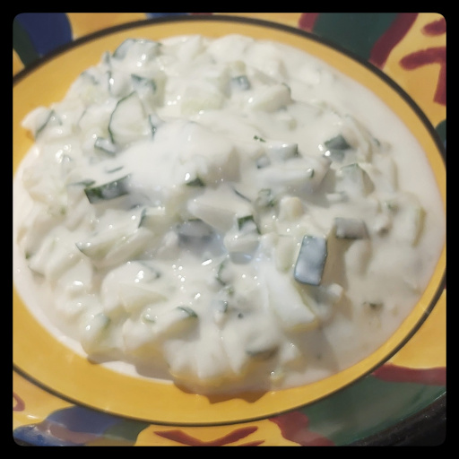

Tzatziki
Fresh and cool, just like you.

plain Greek or full-fat yoghurt
cucumber
garlic
lemon juice
olive oil
salt
Finely chop or grate cucumber, and squeeze out liquid.
Finely mince a clove or two of garlic.
Mix the yoghurt, cucmber, garlic, salt together.
Squeeze in and mix about a tablespoon of lemon juice.
Just before serving, drain off excess moisture and give a final stir.
Drizzle with olive oil.